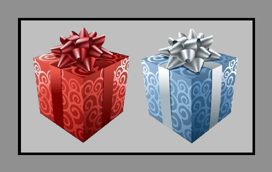
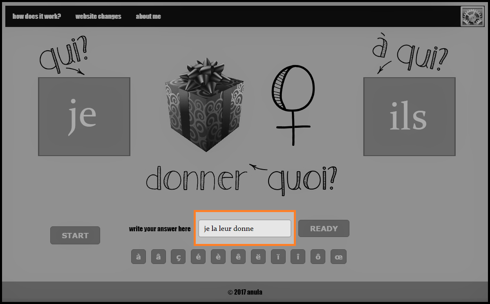

The idea is based on the theory that people can extrapolate word order from one phrase to another. Human can generalize grammar structures even if the sample is very small (hence, practising on just one verb). Additionaly it uses very well known way of learning by repetition.
Starting is not that tricky: You need to press START
Next, the program will display tree things, meaning: someone is giving something to someone else. The idea is to use french pronoun. For example: I give it to you. Or as on the picture below: We give it to him.
There is a catch in french grammar though. The "it" part. In french there are two genders. So depending if it is a male, female or plural you need to use the right pronoun:
LAmeaning female gender
LEmeaning male gender
LESmeaning plural
The second catch is the order of the pronouns. It is different depending on who is the recipient. The pronoun order is altered if the recipient is the third person (meaning: him, her or them)
The goal is to use the right pronoun in the right order. Write the answer in the form window. Here: Je la leur donne

After you press READY the program will tell you if you did it correctly or, in an unlikely situatian when you made a mistake, will give you the right answer.

Make a few exercises a day rather than practising for an hour a week.
Try to say the phrase out loud before you write it down.